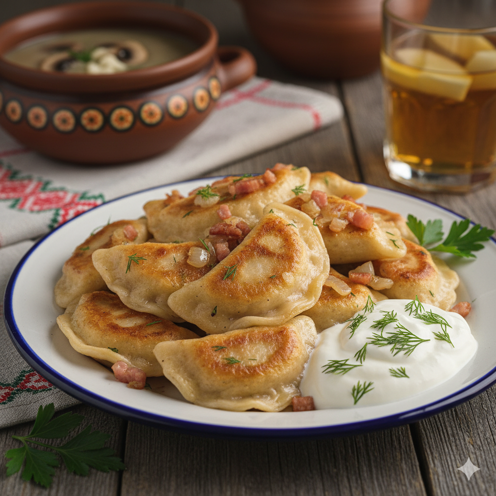

Hauptspeise
Für die Hauptspeise haben wir uns für Pierogi , trallitionelle polnische Teigtaschen entschieden.
Zum RezeptWir stellen euch die polnische Küche vor!
Die polnische Küche vereint herzhafte Traditionen mit intensiven Aromen aus Fermentierung, Räucherkunst und frischen Kräutern.
Im Fokus stehen sättigende Hauptspeisen, eine tief verwurzelte Suppenkultur und reichhaltige Gebäckvariationen.
Es ist eine bodenständige Gastronomie, die vor allem durch Gastfreundschaft und den Einsatz regionaler Zutaten wie Kohl, Kartoffeln und Waldfrüchten besticht.

Für die Hauptspeise haben wir uns für Pierogi , trallitionelle polnische Teigtaschen entschieden.
Zum Rezept